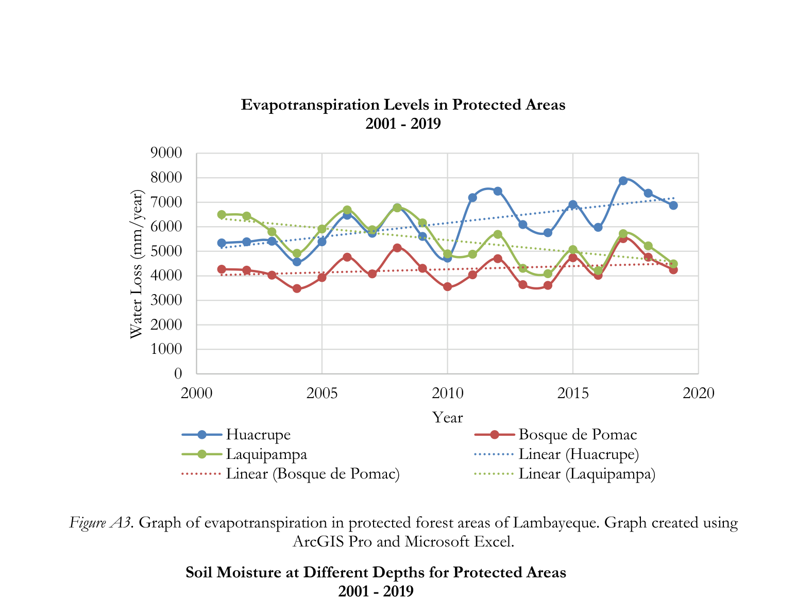

NASA DEVELOP · LAMBAYEQUE · PERU
Water Resources & Mesquite Forest Change
Exploring vegetation change and water availability in Lambayeque's mesquite forests.
01Project summaryResearch context
During NASA DEVELOP, I worked on a water-resources project in Lambayeque, Peru, examining how changing environmental conditions might relate to the decline of mesquite forests.
02MethodologyData processing and analysis
I helped build the NASA data extraction and preprocessing workflow, preparing satellite and environmental observations for ArcGIS Pro analysis. This shared approach involved automating acquisition and processing of Earth-observation datasets. I also contributed to a time-series analysis of NDVI, precipitation, and soil moisture to examine how changes in water availability coincided with vegetation conditions.
03Figures5 research figures
Original NASA DEVELOP research outputs, displayed from image files already uploaded to this portfolio. These figures are unmodified scientific results; the decorative project backdrop is separate.





04Results and next stepsFindings and limitations
The team poster reports declining precipitation over the study period, improved vegetation condition during periods of higher precipitation, and watershed-specific patterns in soil moisture and evapotranspiration. These results do not establish that hydrology alone caused mesquite mortality. The presentation also notes incomplete temporal coverage, coarse-resolution mixed pixels, and differences between NDVI patterns and local partner observations.
Project source materials: Team poster · Team presentation · NASA technical report · Project reflections
Additional original research outputs may be added as they become available.